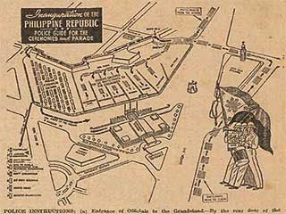

|
j
a v a s c r i p t |
October 12, 1943

Inaugural Police Instructions
Tribune: "Manila All Set for Inaugural ... City Holds Arch, Lantern Contest." Filipinos and third party nationals can only carry Philippine Flags, but Japanese can also carry a Japanese Flag. I can't say I blame a few weaker individuals, particularly those with money in their pockets, for wavering in the face of the continuous propaganda, and now, independence with all the frills promoted vociferously by a minority. The silent and vast majority can only speak in whispers. What's missing is a voice that speaks their case, even if it's only a few choice words through powerful long-wave broadcasts from abroad. It's an unforgivable omission. The Commentator yesterday said the distance between the Dnieper to the Ukraine border is 900 miles instead of 160 to 250 miles. Today he said that a nation of forty million couldn't afford the two million casualties suffered by the Red Army [pre-war Russia already had 168 million]. Fortunately, the people who would fall for this tripe don't read the Commentator. But some of us do ... in lieu of the comics and the crossword puzzle. |
|
|
|
|